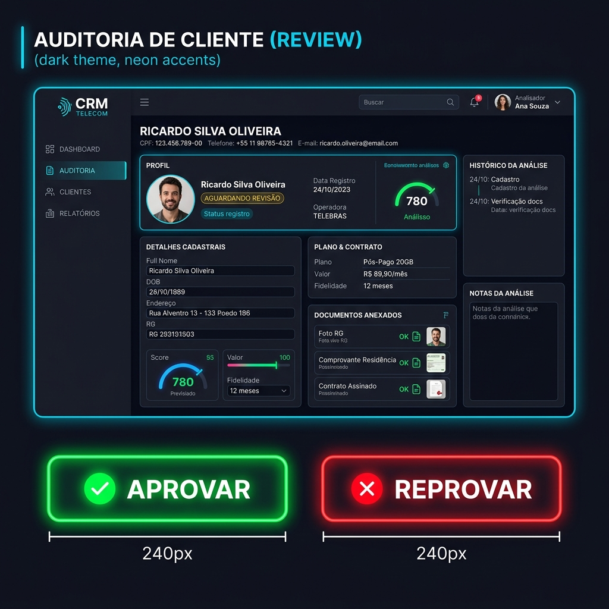
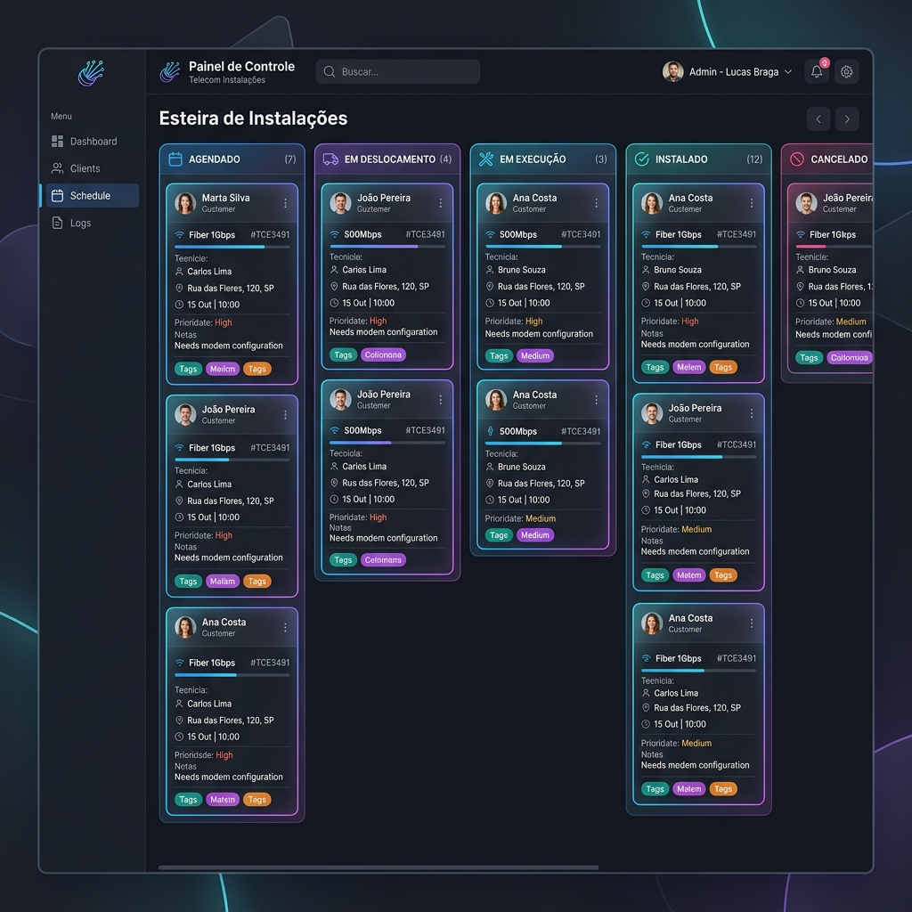
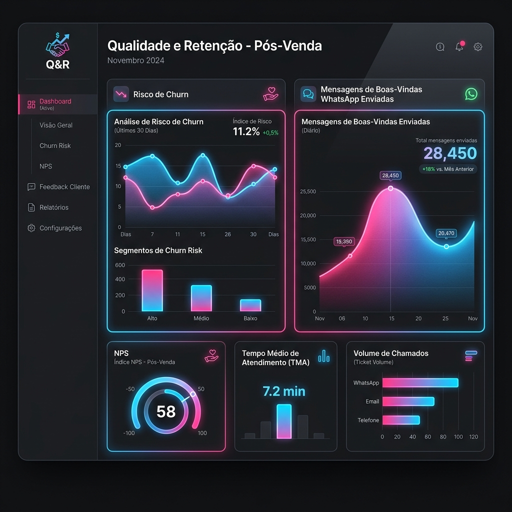
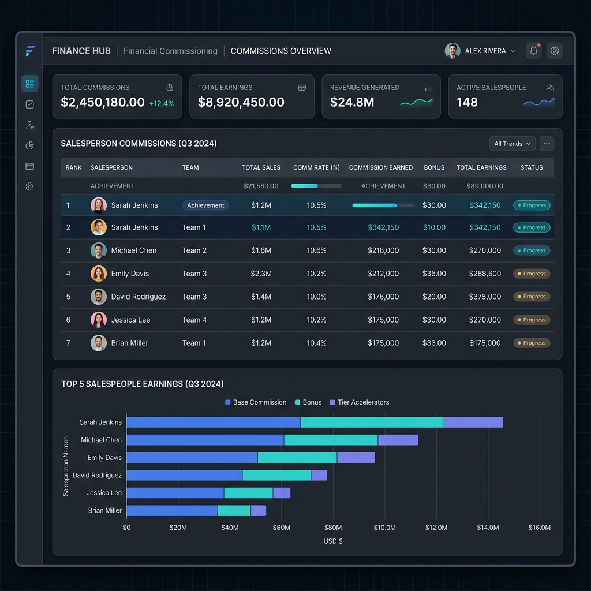
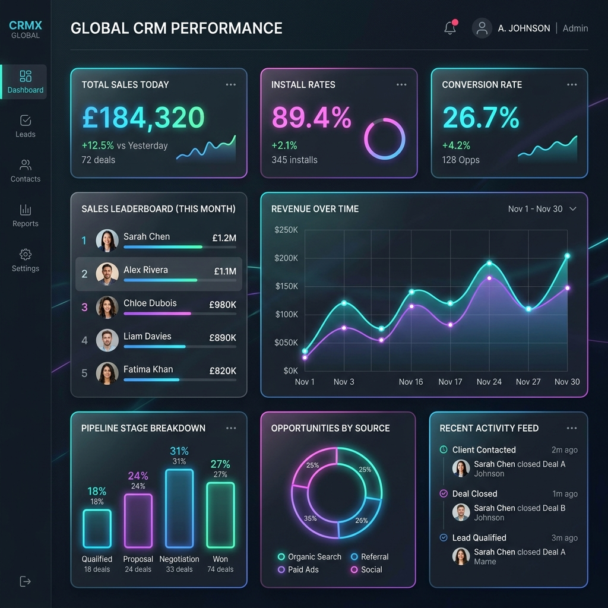

Sistema ClickUp
Fluxo Operacional Passo a Passo
Guia completo de navegação e módulos do sistema
Pressione Espaço ou as Setas para avançar
A Jornada da Venda
Como uma venda flui por dentro do nosso sistema:
- CRM: Onde a venda nasce.
- Auditoria: Conferência e qualificação dos dados.
- Esteira: Agendamento e acompanhamento até a instalação.
- Qualidade: Pós-venda e prevenção de cancelamentos.
- Comissionamento: Pagamento e relatórios de performance.
1. CRM (Cadastro da Venda)
O início de tudo. Aqui os consultores registram os dados do cliente.
O que acontece aqui?
- Coleta de dados pessoais e endereço do cliente.
- Escolha de plano, forma de pagamento e vencimento.
- Verificação inicial de viabilidade técnica (se aplicável).
- A venda entra no sistema com o status inicial "SEM TRATAMENTO".
2. Auditoria
A barreira de segurança para garantir vendas saudáveis.

Passo a passo na Auditoria:
- O auditor assume a venda e valida os dados de contato.
- O roteiro guia a confirmação de cada detalhe com o cliente.
- Se houver erro (Ex: Biometria, Duplicidade), a venda é Pendenciada ou Reprovada.
- Se estiver tudo certo, ela é Aprovada e Cadastrada no sistema final (PAP) e recebe uma O.S. (Ordem de Serviço).
3. Esteira de Instalação
Acompanhamento logístico e técnico.

Acompanhando a Instalação:
- A venda aprovada entra com status AGENDADO.
- O acompanhamento é feito em tempo real para evitar perdas.
- Substatus ajudam a saber se o técnico está a caminho, ou se o cliente pediu reagendamento.
- Quando o técnico finaliza, o status muda para INSTALADA.
4. Qualidade e Boas Vindas
O foco no pós-venda para evitar Churn (cancelamento precoce).

Garantindo a Retenção:
- Envio de Boas Vindas pelo WhatsApp para o cliente recém ativado.
- Acompanhamento de OSAB (Ordem de Serviço Aberta) em caso de falha de conexão nos primeiros dias.
- Tratamento rápido para clientes com risco de cancelamento (FPD/Fraude/Inadimplência precoce).
5. Comissionamento
Fechamento do ciclo com o pagamento do consultor.

Cálculo e Pagamento:
- Vendas instaladas entram para o fechamento de comissão.
- O sistema aplica regras baseadas no Plano, Tipo (CPF/CNPJ) e Aceleradores.
- Descontos podem ser aplicados automaticamente (ex: Cliente inadimplente / Churn).
- Geração do relatório final de pagamento transparente para o vendedor.
Painel de Performance
A visão do gestor (Dashboard).

Métricas principais:
- Total de vendas no dia, mês e conversão de auditoria.
- Taxa de instalação (Agendados vs Instalados).
- Ranking de vendedores e equipes.
- Permite tomada de decisão rápida e estratégica baseada em dados em tempo real.
Fim
Este é o ciclo completo que garante velocidade na venda e qualidade na entrega.
Os prints gerados ilustram as funcionalidades descritas em cada módulo.